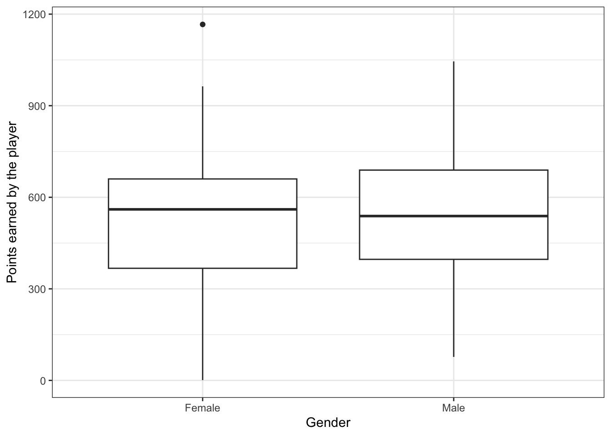
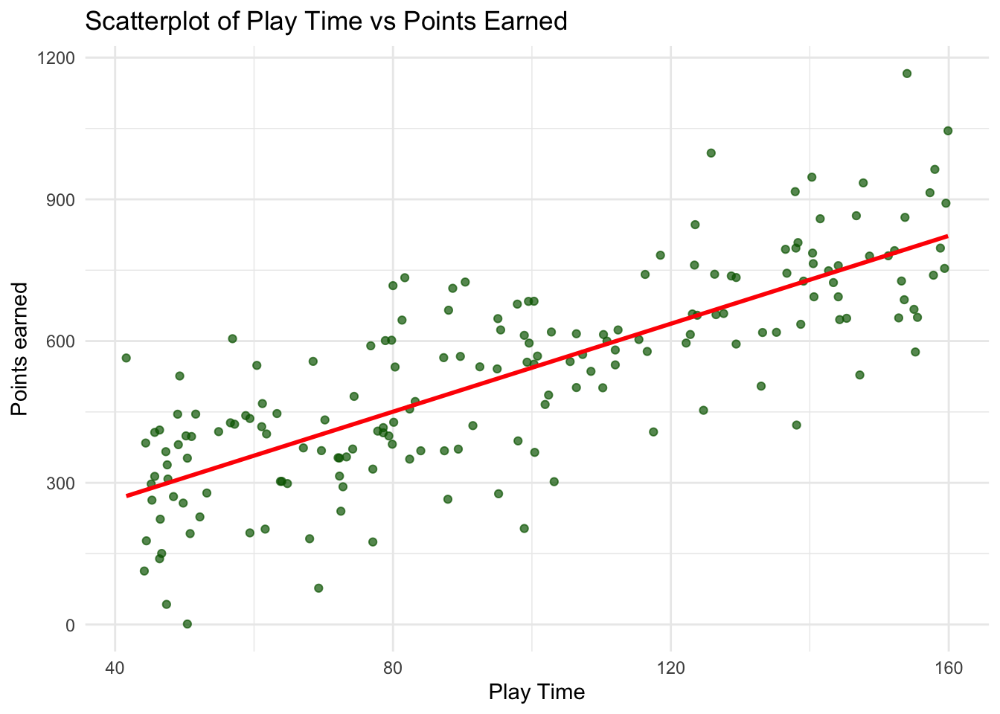

# Setting a seed for reproducibility of data
set.seed(324)
# Definining the number of observations (players) to generate
n_obs <- 180Generating Synthetic Data
1 Introduction
In this excercise, I have chosen to create synthetic data and perform analysis based on it. I will be creating a dataset related to an online game “Soccer 101”.
The dataset will contain information related to the country of origin of the player, age, play-time, points earned throughout the game, and the date when the online game account was created.The daataset will also include information on the Gender of the player and an indicator variable that explains whether the player has been nominated for the player of the year award or not.
2 Data Generation
2.1 Setting the seeds and observation number
In this section we will create the baseline for generating our synthetic data. We will set the seed so that we can create reproducible data, and we will also set the number of observations to 180.
2.2 Creating an empty Dataset
We will then create an empty dataset with just variable names and their data structure. We will make sure that every variable has the same number of obserations.
# Create an empty data frame with placeholders for variables
data <- data.frame(
userID = numeric(n_obs),
Age = numeric(n_obs),
Gender = character(n_obs),
Country = character(n_obs),
InstallationDate = lubridate::as_date(character(n_obs)),
PlayTime = numeric(n_obs),
PointsEarned = numeric(n_obs),
POTY = integer(n_obs)
)We can confirm that the new dataset “data” is formed successfully.
3 Data Formation
Next, we will create the synthetic the data required for our excercise. We will try to control how the data is formed while we generate these data. All the variables will be generated with randomness except for: Points Earned (This variable will be formed as a linear function of the variable play time as higher play time usually results in more control over the game and hence higher points)
We will also make sure that the variable “Player of the Year (POTY) Nominee is independent of country of origin of the player as it makes no sense.
# Variable 1: userID (represents the online userID of the player)
data$userID <- 1:n_obs
# Variable 2: Age of the player (coded as numeric variable)
data$Age <- round(rnorm(n_obs, mean = 23, sd = 5), 1)
# Variable 3: Gender of the player (coded as categorical variable)
data$Gender <- purrr::map_chr(sample(c("Male", "Female"), n_obs, replace = TRUE), as.character)
# Variable 4: Country of origin (coded as categorical variable)
data$Country <- purrr::map_chr(sample(c("USA", "Canada", "Germany"), n_obs, replace = TRUE), as.character)
# Variable 5: Date of Installation (coded as date variable)
data$InstallationDate <- lubridate::as_date(sample(seq(from = lubridate::as_date("2022-01-01"), to = lubridate::as_date("2024-12-31"), by = "days"), n_obs, replace = TRUE))
# Variable 6: PlayTime (coded as numeric variable)
data$PlayTime <- round(runif(n_obs, min = 40, max = 160), 1)
# Variable 7: PointsEarned ( coded as numeric variable)
# PointsEarned will be kept dependent on PlayTime through a linear function
beta_0 <- 50 # Defining coefficient for the linear function (Intercept)
beta_1 <- 5 # Defining coefficient for the linear function (Slope)
# Generating PointsEarned based on PlayTime with some randomness
data$PointsEarned <- round(beta_0 + beta_1 * data$PlayTime + rnorm(nrow(data), mean = 0, sd = 130), 1)
# Variable 8: Player of the Year Nominee (binary variable, 0 = No, 1 = Yes)
# Option 1: Player of the Year Nominees are independent of Country of origin
data$POTY <- purrr::map_int(sample(0:1, n_obs, replace = TRUE, prob = c(0.8, 0.2)), as.integer)4 Saving new dataset:
# Saving the simulated data to a CSV file
write.csv(data, here("data-excercise","data","data.csv"), row.names = FALSE)
# Saving as Rds is optional and we wont trigger that option for now.
#saveRDS(data, here("data-excercise", "data","data.Rds"))5 Data Visualization
We will now visualize the data using multiple figures.
5.1 Figure1: Boxplot of Country vs Points Earned
We observe that there is no statistical difference across countries for points earned as we created these variables with randoness. All countries seem to have the mean in the same range with different variation within the data.
# ggplot2 boxplot for PointsEarned by Country group
ggplot(data, aes(x = Country, y = PointsEarned)) +
geom_boxplot() +
labs(x = "Country of Origin", y = "Points earned by the player") +
theme_bw()5.2 Figure2: Boxplot of Gender vs Points Earned
We can again observe that there is no statistical difference across Gender for points earned as we created these variables with randoness as well. Both male and female seem to have the mean in the same range with different variation within the group.
# ggplot2 boxplot for PointsEarned by Country group
ggplot(data, aes(x = Gender, y = PointsEarned)) +
geom_boxplot() +
labs(x = "Gender", y = "Points earned by the player") +
theme_bw()
5.3 Figure 3: Scatterplot of Life Expectancy vs Population Size
We observe the points earned by the player is going up as the playing time is increasing, this is because we have created the data to follow this pattern. As we set the slope to a positive 5, the data has been generated with a positive correlation.
# Create scatterplot with a red regression line
ggplot(data, aes(x = PlayTime, y = PointsEarned)) + #setting variables to different axis
geom_point(color = "darkgreen", alpha = 0.7) + geom_smooth(method = "lm", color = "red", se = FALSE) +
labs(
title = "Scatterplot of Play Time vs Points Earned", # giving a title to the figure
x = "Play Time", #labeling the axis
y = "Points earned" #labeling the axis
) +
theme_minimal()`geom_smooth()` using formula = 'y ~ x'
5.4 Table 1: Fitting a linear model to test the results in Figure 3
We will fit a linear regression model with the same x and y variable to see the statistical result and slope.
# Fitting the linear model
fit1 <- lm(PointsEarned ~ PlayTime, data = data) # fit1 is a model with Age as predictor
summary(fit1)
Call:
lm(formula = PointsEarned ~ PlayTime, data = data)
Residuals:
Min 1Q Median 3Q Max
-335.18 -81.80 3.11 81.69 371.40
Coefficients:
Estimate Std. Error t value Pr(>|t|)
(Intercept) 78.2272 28.4187 2.753 0.00652 **
PlayTime 4.6537 0.2742 16.971 < 2e-16 ***
---
Signif. codes: 0 '***' 0.001 '**' 0.01 '*' 0.05 '.' 0.1 ' ' 1
Residual standard error: 132.1 on 178 degrees of freedom
Multiple R-squared: 0.6181, Adjusted R-squared: 0.6159
F-statistic: 288 on 1 and 178 DF, p-value: < 2.2e-16As we can see the coefficient (+4), which is statistically significant, is around the slope we first set (+5). The data has been generated as per our direction.
5.5 Figure 4: Scatterplot of Life Expectancy vs Population Size
We can observe that the points earned by the player is showing no relation with the playing time, this is because we did not set any relation between these variables and they were generated with randomness.
# Creating scatterplot
ggplot(data, aes(x = Age, y = PointsEarned)) + #setting variables to different axis
geom_point(color = "darkgreen", alpha = 0.7) +
labs(
title = "Scatterplot of Play Time vs Points Earned", # giving a title to the figure
x = "Age of the player", #labeling the axis
y = "Points earned by the player" #labeling the axis
) +
theme_minimal()5.6 Table 1: Fitting a linear model to test the results in Figure 4
We will fit a linear regression model with the same x and y variable to see the statistical result and slope.
# Fit the linear model
fit2 <- lm(PointsEarned ~ Age, data = data) # fit1 is a model with Age as predictor
summary(fit2)
Call:
lm(formula = PointsEarned ~ Age, data = data)
Residuals:
Min 1Q Median 3Q Max
-537.22 -151.51 22.07 155.17 626.10
Coefficients:
Estimate Std. Error t value Pr(>|t|)
(Intercept) 501.954 74.989 6.694 2.74e-10 ***
Age 1.254 3.202 0.392 0.696
---
Signif. codes: 0 '***' 0.001 '**' 0.01 '*' 0.05 '.' 0.1 ' ' 1
Residual standard error: 213.7 on 178 degrees of freedom
Multiple R-squared: 0.0008613, Adjusted R-squared: -0.004752
F-statistic: 0.1534 on 1 and 178 DF, p-value: 0.6957We can confirm that the relation between Age and Points earned is not statistically significant.
5.7 Table 3: Fitting a Probit model for Player of the Year Nomination
We will fit a probit regression model with Age, Playtime and Country as predictors to see if they influence the outcome of the POTY variable.As we have not set such relation between them, they should show no relation among them.
# Fitting the probit model
fit3 <- glm(POTY ~ Age + PlayTime + Country, family = binomial(link = "probit"), data = data) # fit1 is a model with Age as predictor
summary(fit3)
Call:
glm(formula = POTY ~ Age + PlayTime + Country, family = binomial(link = "probit"),
data = data)
Coefficients:
Estimate Std. Error z value Pr(>|z|)
(Intercept) -0.3633860 0.6441956 -0.564 0.573
Age -0.0325857 0.0235439 -1.384 0.166
PlayTime -0.0001208 0.0033010 -0.037 0.971
CountryGermany 0.0744650 0.2923346 0.255 0.799
CountryUSA 0.0617818 0.2874123 0.215 0.830
(Dispersion parameter for binomial family taken to be 1)
Null deviance: 148.66 on 179 degrees of freedom
Residual deviance: 146.57 on 175 degrees of freedom
AIC: 156.57
Number of Fisher Scoring iterations: 5We can verify from the results above that there is no such relation among the variables.